“Not interested”
2 taps
Tells Instagram to show fewer posts like this one. The quickest way to clean a feed.
Menu icon on a Reel (⋯ on a post)›Not interested · Не интересует
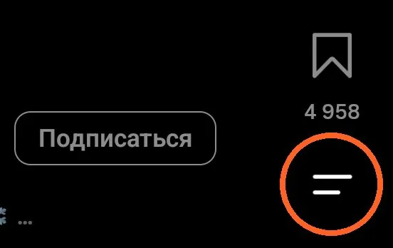
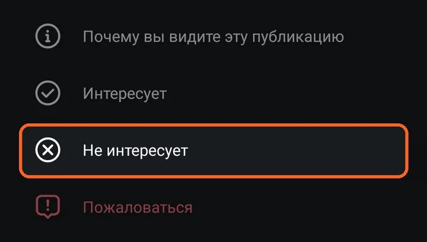
Instagram and YouTube already have buttons that let you steer your feed. Most of them are switched off or buried in settings. This guide shows where they are, and the plan below gives you one small step a day.
Who chose the last video you watched?
A recommendation feed is built to keep you watching. By default it picks for you: the personalised feed is on, time limits are off, and the scroll never ends. That is fine if you chose it. The point of this week is to make that a choice you actually made.
Menu names change between app versions. If a step looks different on your phone, type the feature name into the search bar at the top of Settings.
Tells Instagram to show fewer posts like this one. The quickest way to clean a feed.


Shows the reasons a post landed in your feed: an account you follow, something you liked, your activity.
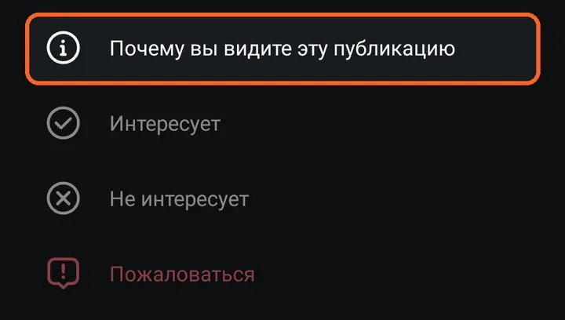
Only posts from accounts you follow, newest first, with no suggestions mixed in.
One switch hides suggested posts in your main feed for a month. You can turn it back off any time.
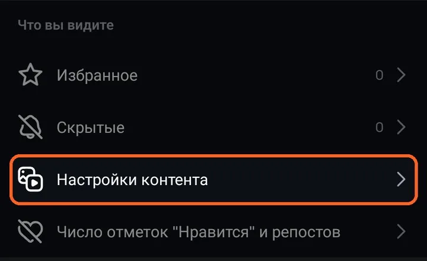
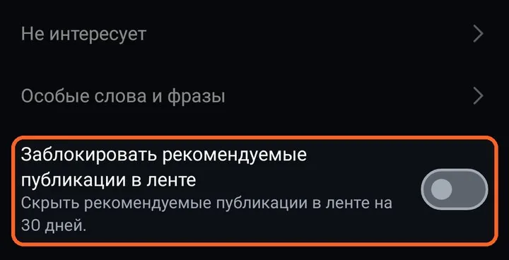
Clears what Instagram has learned about your interests for Feed, Explore and Reels. Accounts you follow and ads stay the same.
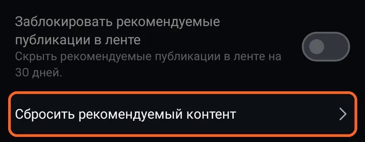
Can’t be undone. Your recommendations start from zero. Skip it if you like your feed as it is.
Delete what you searched for and the activity Instagram uses to pick suggestions.
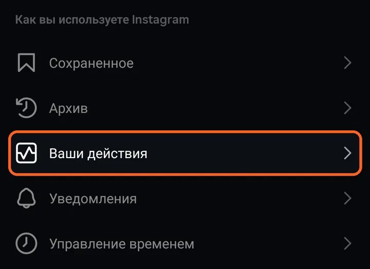
A daily limit tells you when you have used up your time for the day. Sleep mode quiets the app during the hours you set. The same screen shows your average time per day.
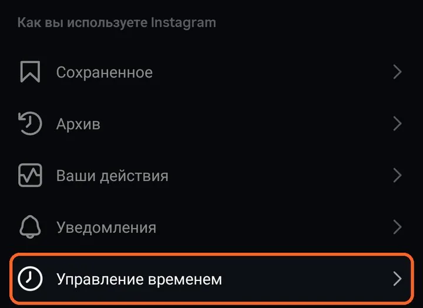
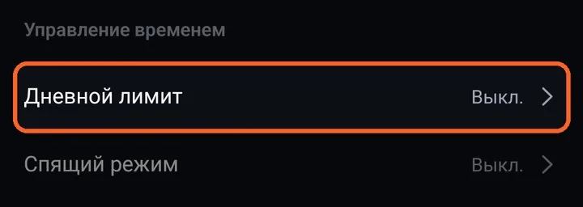
Removes a video from your home feed, or stops a whole channel from being suggested.
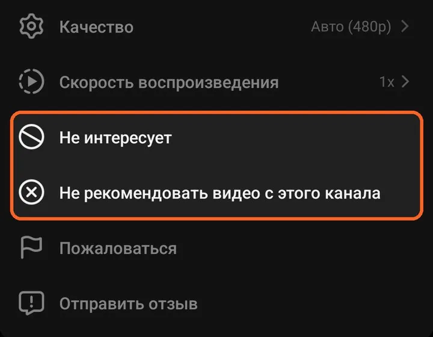
YouTube has no single reset button. You reset recommendations from the history page: clear your watch history, and delete the “YouTube recommendation data” you gave when tuning your home feed.
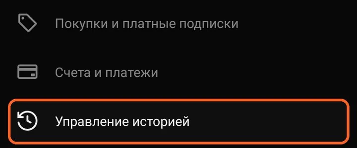
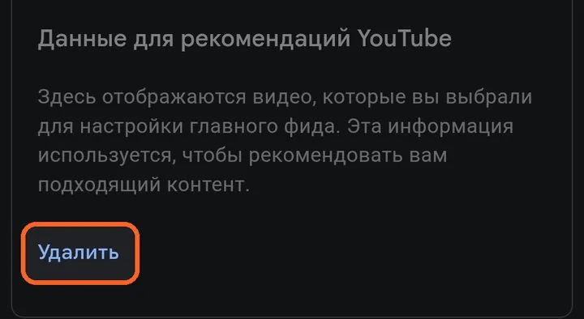
Can’t be undone. Your history and the recommendations built on it are gone.
While paused, what you watch is not used for recommendations. You can switch it back on any time.
Caps how long you can scroll Shorts each day, from 15 minutes to 2 hours. The same screen shows how much you watched this week.
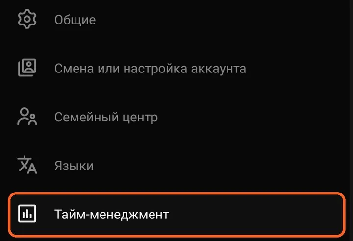
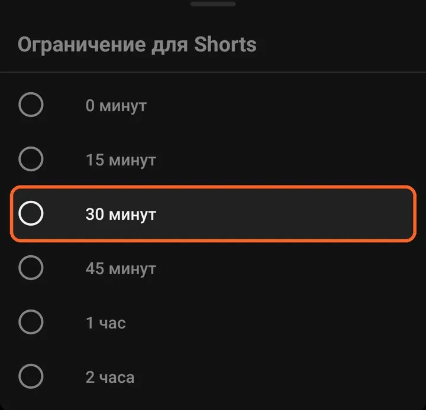
YouTube explains why you see an ad, but not why a regular video or Short was recommended. This is one of the gaps we found when comparing the two apps.
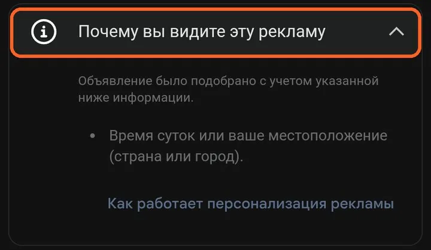
0 of 7 days done
We will send you a link to five short questions in Telegram. Use the same code word you created in the first survey, so we can compare before and after without knowing who you are.